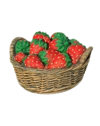
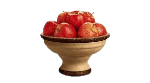

Живой кефирный тибетский гриб

Полученный с его помощью кефир является уникальным лечебным
препаратом, помогающим боротся с аллергией, гипертонией, язвенной болезнью желудка и двенадцатиперстной кишки. Кефир, получаемый в результате жизнедеятельности гриба, оказывает общее оздоровительное действие и стимулирует иммунитет.
Кефирный гриб для похудения

Настой тибетского молочного гриба снижает вес при ожирении. Весь его секрет в том, что он преобразует жиры в более простые соединения, которе затем сам же и выводит из организма человека. Для того чтобы похудеть, следует пить настой тибетского молочного гриба ежедневно через полчаса после еды и один - два раза в неделю устраивать разгрузочные дни.